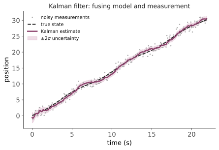

本页目录
现代 III · 观测器与卡尔曼滤波
层次：本科核心 + 硕博与业界高频使用 ｜ 🔗 前置：概率、高斯分布、条件期望（数学站 / grad-math）。 上一页的 LQR 需要全部状态，实际却只能测到一部分，而且测量还有噪声。本页讲如何从不完整、含噪的观测中重建内部状态——这是控制工程与信号处理的交汇点，也是从阿波罗导航到今天每一部手机的姿态估计都在用的技术。
学习层：仓储 AGV 只有带噪位置读数，却还要估计速度
1. 具体工程情境：一维位置传感器的预测与修正
一辆仓储 AGV 每秒收到一次带噪的轴向位置测量。控制器不能直接测得速度，于是用二维状态
这里 \(w_k\) 是过程扰动、\(\eta_k\) 是测量噪声；\(Q\) 描述“匀速模型可能漏掉的加速度”，\(R\) 描述位置传感器的噪声。实验把真实运动和测量噪声都固定在 seed=20260824 的一组样本上，因此拖动 \(Q/R\) 时改变的是滤波器的信任，不是偷偷换了一批数据。
预测门，必须先作答：
- 增大 \(R\) 时，位置卡尔曼增益更大还是更小？
- 创新 \(\nu_k\) 是测量与预测的差，还是协方差的和？
- 一次有信息的测量更新后，位置协方差 \(P_{pos}\) 应该收缩到 0、变大，还是相对 \(P^-_{pos}\) 下降但仍可能非零？
2. 正式公式桥：创新是数据入口，P 是不确定度账
令
预测和更新依次为
\(K\) 是“模型预测和测量之间怎么分账”，而 \(P\) 是“这次分账之后还剩多少不确定”。\(Q\) 大会让预测协方差长得更快，\(R\) 大会让同一个创新得到更小的修正；二者不能只凭一张平滑曲线判定谁“更真实”。
3. 动手实验：固定测量，分开改变 Q 与 R
提交三项预测后，拖动 \(Q\)、\(R\) 和测量步数。图中红点是固定 seed 的测量，绿虚线是真值，金虚线是预测，蓝线是估计，透明带是 \(\hat p_k\pm2\sqrt{P_{pos,k}}\)；表格逐行给出创新、创新方差、两个增益和位置协方差。观察增大 \(R\) 时蓝线怎样拒绝单个测量，增大 \(Q\) 时透明带和增益怎样改变。
JavaScript 失效时的静态 fallback：默认 \(Q=q=0.18,\ R=0.56,\ \Delta t=1\)，初始 \(\hat x=[0,0]^\mathsf T\)、\(P_0=\operatorname{diag}(4,1)\)，测量 seed 为 20260824。前几行透明账如下：
| \(k\) | \(z_k\) | \(\hat p^-_k\) | \(\nu_k\) | \(S_k\) | \(K_{pos}\) | \(\hat p_k\) | \(P_{pos}\) |
|---|---|---|---|---|---|---|---|
| 0 | −0.331 | 0 | −0.331 | 5.605 | 0.900 | −0.298 | 0.504 |
| 1 | 0.584 | −0.363 | 0.947 | 2.295 | 0.756 | 0.353 | 0.423 |
| 2 | 1.497 | 0.770 | 0.727 | 2.153 | 0.740 | 1.308 | 0.414 |
末端读数约为 \(\hat p=22.580\)、真值 \(23.322\)、\(\sqrt{P_{pos}}=0.604\)。这些数字是固定测量实现的审计样本，不是“滤波器必然达到的误差界”；脚本只实现线性二维常速度模型，不做野值门控、非线性雅可比或多传感器融合。
4. 误区与模型边界
- \(P\) 小不等于真值一定近：协方差是模型和噪声假设下的条件不确定度，模型错了时可能过度自信。
- 固定 seed 不是统计证明：它让参数对比可复现；一次测量序列不能估计完整的现实噪声分布。
- 增大 \(Q\) 不是自动修复建模：它只是允许模型更快放弃预测，过大时估计会变得抖且置信区间变宽。
- 线性高斯条件很关键：强非线性、重尾野值、丢包和暂时不可观都需要 EKF/UKF、门控、平方根滤波或更完整的系统设计。
一、观测器：用模型 + 输出反馈估计状态
Luenberger 观测器的思想极简洁：在计算机里跑一个系统的副本，并用实际输出与预测输出的差来修正它：
估计误差 \(e = x - \hat{x}\) 满足
只要 \((A,C)\) 能观（第七页），就可以选 \(L\) 使 \(A-LC\) 的特征值任意配置 → 估计误差按期望速度收敛到零。
注意这与状态反馈的对偶：配置 \(A-BK\) 用 \(K\)，配置 \(A-LC\) 用 \(L\)；能控对能观。这就是第七页说的对偶性的具体兑现。
分离原理：状态反馈 + 观测器组合时，闭环极点恰好是"控制器极点"与"观测器极点"的并集——可以分别设计。这是一个很方便的结论，但要记住上一页的警告：分别最优不等于组合鲁棒（Doyle 反例）。
工程经验：观测器极点通常设计得比控制器极点快 2–5 倍（估计要跟得上控制），但不能太快——否则会放大测量噪声。这个取舍正是卡尔曼滤波要系统化解决的问题。
二、卡尔曼滤波：把噪声统计考虑进来
Luenberger 观测器凭直觉选 \(L\)。卡尔曼滤波器在噪声统计已知时给出最优的 \(L\)。
系统模型加入噪声：
\(w \sim \mathcal{N}(0,Q)\) 是过程噪声（模型不准、未知扰动），\(v \sim \mathcal{N}(0,R)\) 是测量噪声。
算法是两步循环，结构极其清晰：
预测（时间更新）——用模型往前推：
更新（测量更新）——用新观测修正：

卡尔曼增益 \(K\) 的直觉（本页最该记住的）：它是"信任模型"与"信任测量"之间的权衡——
- 测量噪声 \(R\) 大 → \(K\) 小 → 更信任模型预测，对测量反应迟钝；
- 过程噪声 \(Q\) 大 → \(P\) 增长快 → \(K\) 大 → 更信任测量，对模型不确定；
- \(P\) 是估计误差协方差——滤波器不仅给出估计，还给出它对自己有多确定。
\(Q\) 与 \(R\) 的选择是实际调参的核心：\(R\) 通常可由传感器规格或静态实验测得；\(Q\) 则往往是"调"出来的，它实际上代表"我对模型的不信任程度"。工程上把 \(Q\) 当作调节旋钮，是完全正当的做法。
三、几个重要性质
- 递推：只需上一步的估计与协方差，不必存储历史数据——这是它能在 1960 年代嵌入阿波罗导航计算机的原因；
- 最优性：在线性高斯假设下，卡尔曼滤波是最小均方误差估计，也是贝叶斯后验均值。注意条件：线性 + 高斯 + 噪声统计已知。三个条件在实际中都常被违反；
- 与 LQR 对偶：卡尔曼的 Riccati 方程与 LQR 的形式对偶。控制与估计是同一个数学的两面；
- 稳态形式：若系统时不变，\(P\) 收敛到稳态，\(K\) 变成常数——可离线算好，在线只需矩阵乘法，计算极省。嵌入式系统常用这个形式。
四、非线性扩展
现实中系统常是非线性的（导航、机器人姿态、SLAM）。三条路线：
| 方法 | 思想 | 特点 |
|---|---|---|
| EKF（扩展卡尔曼） | 在当前估计处线性化 | 最常用；强非线性或初值差时会发散，需要雅可比矩阵 |
| UKF（无迹卡尔曼） | 传播一组精心选择的 sigma 点 | 无需雅可比，对强非线性更好，计算略贵 |
| 粒子滤波 | 用大量样本近似任意分布 | 可处理多峰、非高斯；高维时粒子数爆炸 |
实践判断：EKF 因简单高效而占据绝大多数嵌入式应用（无人机姿态、组合导航）；UKF 在中等非线性下是低成本的改进；粒子滤波用于机器人定位等分布可能多峰的场合（第十九页）。
EKF 发散是实践中最常见的问题，原因通常是：初始协方差设得太小（滤波器过度自信）、\(Q\) 太小（不允许模型出错）、或线性化点偏离太远。"滤波器太自信"是新手最常犯的错误——它会拒绝接受与预测不符的测量，然后越错越远。
五、实际工程中的关键问题
- 传感器融合：卡尔曼滤波天然支持多传感器（每个传感器一次测量更新即可）。惯性导航（高频但漂移）+ GNSS（低频但无漂移）的融合是教科书级应用——互补的误差特性正是融合的价值所在；
- 异常值与故障：单个野值可能严重污染估计。实践中需要新息检验（马氏距离门限）拒绝异常测量——这是工业级实现的必备部分，教科书通常不讲；
- 可观性退化：某些运动状态下系统会暂时不可观（如匀速直线运动时，某些偏差无法辨识）。此时协方差会沿某方向增长，滤波器必须能正确表达这种"我不知道"；
- 数值稳定性：协方差矩阵必须保持对称正定，长时间运行可能因数值误差失效。平方根滤波（如 UD 分解）是工业标准做法。
六、为什么这一页很重要
卡尔曼滤波是控制、信号处理、机器人、导航共享的核心工具，也是"用模型 + 数据做最优推断"这一思想的最清晰范例：
- 🔗 微电子站：芯片内的自适应调压需要估计实际工作状态；
- 🔗 生物站：预测脑假说主张大脑在做类似的预测-修正循环（贝叶斯大脑），与卡尔曼结构高度类似；
- 🔗 AI 站：状态空间模型、序列滤波与现代序列建模的关系。
"预测—比较—修正"这个循环，在这门课里出现了三次：反馈控制（第一页）、观测器（本页）、以及后面的 MPC（第十七页）。它可能是工程中最普适的结构。
七、要点
- 观测器 = 在计算机里跑系统副本 + 用输出误差修正；能观则误差可任意快收敛；
- 卡尔曼增益是"信任模型 vs 信任测量"的权衡，由 \(Q\)、\(R\) 决定；
- 它同时输出估计与不确定度，这是其区别于普通滤波器的关键；
- 递推形式使其可在极有限的算力上运行；
- EKF 最常用但会发散，根因多为"滤波器过度自信"；
- 野值剔除、可观性退化、数值稳定是工业实现的必备考量。
下一页：以上全部是连续时间理论，而真实控制器跑在计算机上——采样、量化、延迟。数字实现会带来一批新问题，其中有些相当反直觉。